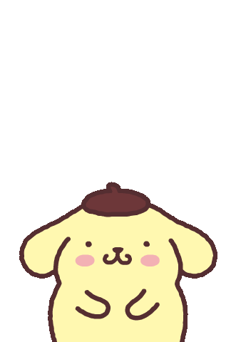

Hice este pequeño espacio para que nunca olvides lo mucho que te quiero y significas para mí. Estoy muy agradecido de que esto te pertenezca a ti y sólo a ti.
Presiona y descubre esta hermosa canción para ti

No veo mejor forma de decirte las cosas que con una canción. Espero que esta melodía se haga tan especial para ti como tú lo eres para mí.
Haz clic para voltear 🔄